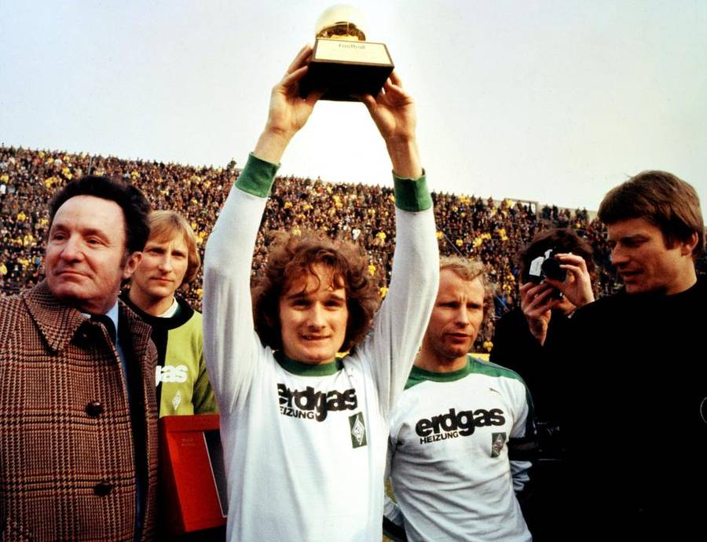
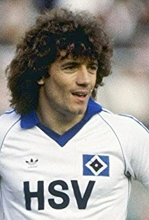

Allan SIMONSEN - 1977

- Un Danois (Simonsen soulevant son titre) pour l'histoire
Malgré son handicap d'appartenir à un « petit pays » écarté des grandes joutes internationales, c'est finalement Simonsen qui l'emporta, mais d'extrême justesse..
Nationalité : Danoise
Né le : 15 décembre 1952, à Copenhague (DAN)
Taille : 1,65
Poids : 58 kg
Poste : attaquant puis milieu
Clubs : Vejle BK (1968-1972), Borussia Mönchengladbach (1972-1979), FC Barcelone (1979-1982), Charlton Athletic (1982-1983) et Vejle BK (1983-1986)
Palmarès de joueur : Coupe des Coupes 1982 ; Coupe de l'UEFA 1975 et 1979 ; Championnat du Danemark 1971, 1972 et 1984 ; Championnat de RFA 1975, 1976 et 1977 ; Coupe du Danemark 1972 ; Coupe d'Allemagne 1973 ; Coupe d'Espagne 1981 ; Supercoupe d'Allemagne 1976
Bilan en équipe nationale : 56 sélections A, 21 buts (1972-1986)
Bilan en phase finale de Coupe du monde : 1 participation, 1 match (1986)
Palmarès Ballon d'Or : vainqueur en 1977 et (3e en 1983)
Carrière d'entraîneur : Vejle BK (1990-1991), Îles Féroé A (février 1994-décembre 2001) et Luxembourg A (janvier 2002-décembre 2004)
Classement du Ballon d’Or France Football 1977 :
Allan Simonsen (Danemark / Borussia Mönchengladbach),
74 pts.

Kevin Keegan (Angleterre / Hambourg SV),
71 pts.
Michel Platini (France / Nancy),
70 pts.
Retour à l'accueil
 Allan SIMONSEN - 1977
Allan SIMONSEN - 1977